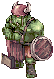
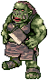
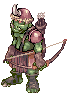
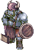
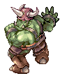
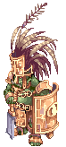

Fever-Map · Dynamic Field · Orc
🧙 Geffen Fever Field
Klassische Dynamic-Fever-Map auf gef_fild02 mit Orc-Theme. Zwei parallele Boss-Counter (Dark Orc Lord & Dark Orc Hero) und Orcish-Weapon-Varianten mit Fever-Random-Options.
🗺️ Map-Überblick
Beide Bosse haben einen eigenen Counter, der parallel läuft. Wer auf Dark Orc Lord aus ist, sollte gezielt Dark Orc Archer farmen, nicht die High-Orc-Varianten.
👾 Monster auf der Map

Orc WarriorDemi-Human · EarthkRO #1023Divine Pride ↗

Orc LadyDemi-Human · EarthkRO #1273Divine Pride ↗

Dark Orc ArcherChampion · Demi-Human · EarthkRO #1189Divine Pride ↗

Dark High OrcChampion · Demi-Human · FirekRO #1213Divine Pride ↗

Dark Orc LordMVP · Demi-Human · EarthkRO #1190Divine Pride ↗

Dark Orc HeroMVP · Demi-Human · EarthkRO #1087Divine Pride ↗
🎯 Frenzy Champion: Frenzy Creamy (Geffen Field Fever · TWRoZ)
Spawnt nach Champion-Kills auf der Map. Daten aus midgardhub.com.
 Frenzy Creamy
MVP · Wind
Frenzy Creamy
MVP · Wind
kRO #1018Divine Pride ↗
⚙️ Map-Mechanik
- Specialized poison pools continuously drain physical HP pools.
- Magical skills inflict 30% bonus elemental damage.
💡 Pro-Tipps
- Carry Green Potions or rely on Priests for Quick Detox spells.
- Use Wind elemental attacks.
🎁 Frenzy-Drop-Roster (3 Items aus Item-DB)

🛡️ Equipment-Drops
Orcish-Weapon-PoolMixed Weapons
- Konkrete Item-IDs werden ergänzt, sobald aus offizieller Quelle verifiziert.